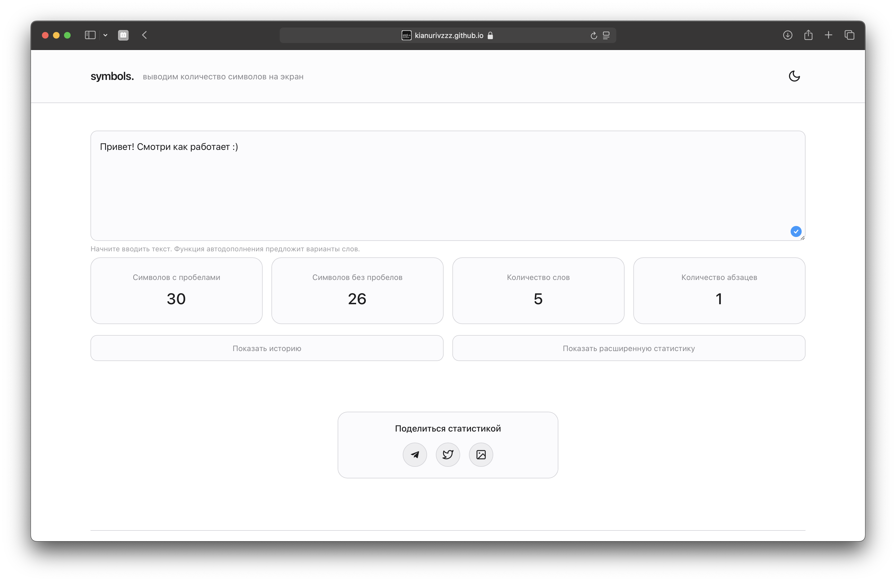
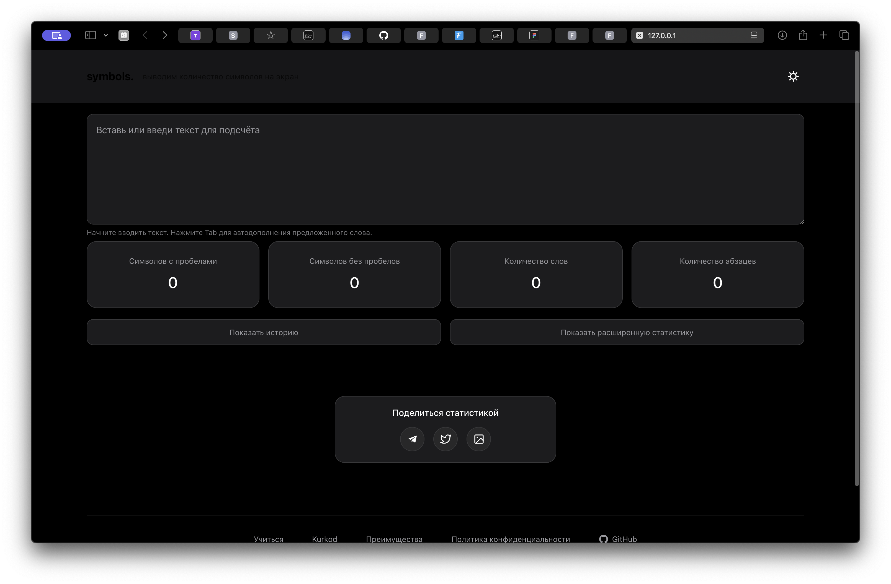
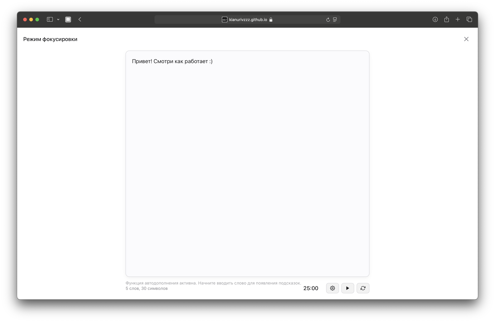
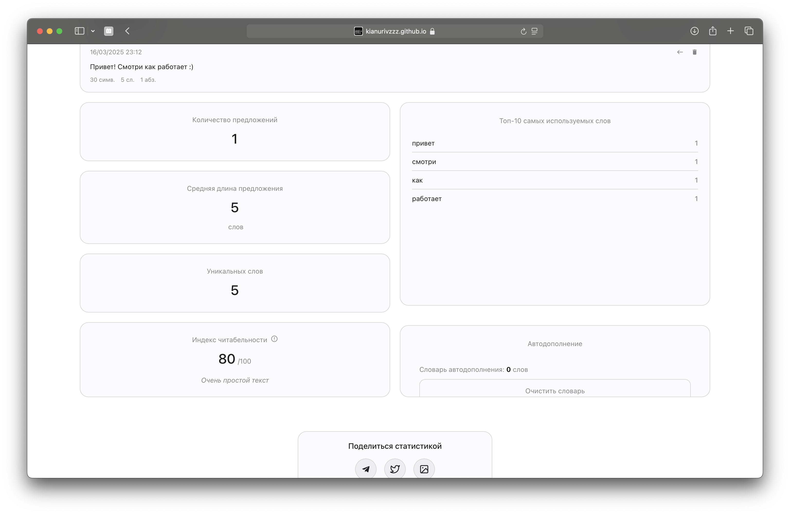

Преимущества symbols
Сервис даёт множество полезных функций для работы с текстом, которые
помогут в написании, редактировании и анализе контента
Мгновенный подсчёт символов
Получай точную статистику по количеству символов, слов,
предложений и абзацев в режиме реального времени. Идеально для работы с ограничениями по
объёму текста.

Тёмная и светлая темы
Выбирай комфортный для ваших глаз режим работы. Тёмная тема
снижает нагрузку на зрение при работе в условиях низкой освещённости.

Режим фокусировки
Сконцентрируйся на написании текста без отвлекающих факторов.
Режим фокусировки убирает всё лишнее с экрана и позволяет полностью погрузиться в творческий
процесс.

Расширенная статистика
Получай детальную информацию о вашем тексте: плотность ключевых
слов, среднюю длину предложений, частоту использования слов и многое другое.

Умное автодополнение
Ускорь процесс написания текста с помощью интеллектуального
автодополнения, которое учится на основе ваших текстов и предлагает релевантные варианты
слов.

Начни использовать symbols прямо сейчас
Бесплатный онлайн-сервис для работы с текстом без регистрации и
ограничений. Все данные остаются только на вашем устройстве.
Перейти к сервису